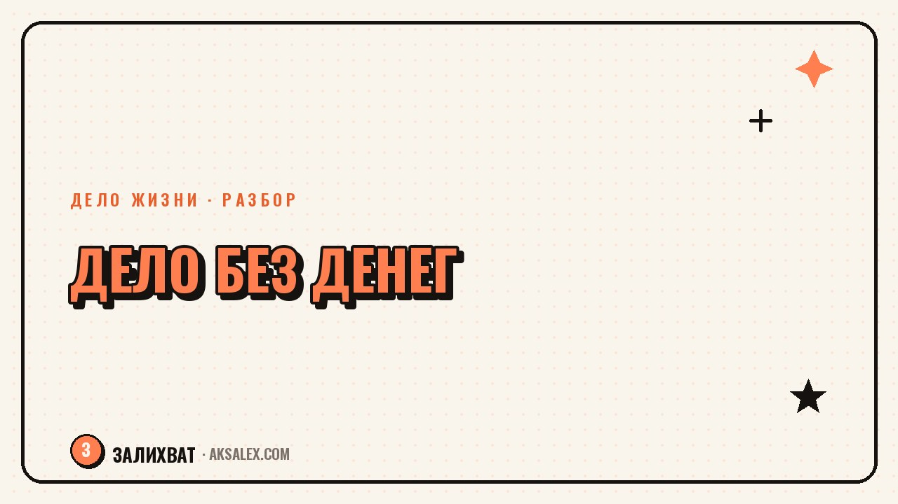

Как начать своё дело без денег: с чего реально начать

«Начни своё дело без денег» звучит как заголовок из ленты, а не как реальный план. Но на практике большинство маленьких дел - мастера маникюра, кондитеры, репетиторы, мастера по ремонту мебели - начинались именно так: без кредита, без цеха, без закупки на склад. Дело не в том, что деньги не нужны вообще, а в том, что первый шаг можно сделать без них, если начинать с услуги, а не с продукта, и с одного клиента, а не с рынка целиком.
Почему «без денег» - это не миф, а другой порядок действий
Страх перед стартом часто держится на одной идее: сначала нужны вложения - оборудование, сайт, реклама, запас товара, - и только потом можно работать. Это верно для производства и товарного бизнеса, но неверно для услуг и небольших дел, которые строятся на твоём умении, а не на складе. Репетитору не нужен офис для первого ученика. Мастеру по маникюру не нужен салон для первой клиентки - достаточно своих рук и места на кухне.
Разница между «нужны деньги» и «нужен порядок действий» в том, что деньги чаще всего появляются после первой продажи, а не до неё. Задача на старте - не накопить бюджет, а найти способ получить первый заказ с тем, что уже есть: навыком, временем, телефоном, знакомыми.
Что обычно не нужно на старте, хотя кажется обязательным
- Юридическое оформление - самозанятость регистрируется за один день и бесплатно, когда появится первый доход
- Сайт и реклама - для первых клиентов хватает соцсетей, сарафанного радио и личных сообщений
- Запас товара или оборудования - можно работать на заказ, беря аванс на материалы у конкретного клиента
- Готовый бренд и логотип - это решается позже, когда понятно, что дело вообще работает
С чего начинать: услуга, а не продукт
Самый быстрый вход без денег - продавать своё время и умение, а не вещь. Если ты шьёшь, первой продажей может быть не партия готовых изделий, а переделка одной вещи для знакомой. Если ты разбираешься в нейросетях, первой продажей может быть не курс, а час консультации для соседа, который не понимает, как настроить ChatGPT под свою работу.
Услуга не требует закупки материалов заранее - материалы либо предоставляет клиент, либо покупаются на аванс под конкретный заказ. Это снимает главный барьер: не нужно угадывать, купят ли у тебя товар, если он уже сделан и лежит на складе.
Первая продажа редко случается по плану - она случается у знакомого, соседа или в комментариях под постом, где ты просто сказал, что умеешь это делать.
Как найти первый заказ без рекламного бюджета
Без бюджета на продвижение работает один простой приём: сказать вслух и конкретно, что ты делаешь. Не «я подумываю открыть своё дело», а «я беру заказы на торты на вынос с этой недели». Конкретная формулировка в сторис, в чате с друзьями или в комментарии под чужим постом работает лучше любой рекламы, потому что человек, которому это нужно, узнаёт об этом именно сейчас, а не когда-нибудь.
- Сообщить о старте дела лично знакомым и в своих соцсетях - без рекламы, просто фактом
- Предложить первым клиентам скидку или бонус в обмен на отзыв и разрешение использовать фото работы
- Договориться об обмене услугами с другим начинающим мастером - взаимный пиар без денег
- Оставить предложение в местных чатах - дома, района, школы - где уже есть доверие к участникам
Что делать с деньгами, когда они появились
Первые деньги от дела лучше не тратить сразу на красивую упаковку или рекламу - их разумнее пустить обратно в работу: материалы для следующего заказа, инструмент, который реально ускорит процесс. Прибыль на старте - это топливо для следующего шага, а не повод для покупки логотипа.
Отдельный вопрос - оформление. Как только появляется регулярный доход, стоит зарегистрировать самозанятость: это недорого, занимает один день через приложение «Мой налог» и защищает от вопросов налоговой в будущем. Откладывать оформление «до лучших времён» - частая ошибка, которая потом выливается в лишние разговоры с банком или налоговой.
Сравнение подходов к старту без денег
Разные дела требуют разного первого шага. Вот как может выглядеть старт без вложений для нескольких типичных направлений.
| Направление | Первый шаг без денег | Где взять первых клиентов |
|---|---|---|
| Услуги (мастер, репетитор, консультант) | Предложить работу знакомому по себестоимости материалов | Соцсети, сарафанное радио, местные чаты |
| Хендмейд и еда на заказ | Взять аванс на материалы у первого клиента | Фото в сторис, знакомые, маленькие группы по интересам |
| Онлайн-услуги (тексты, дизайн, нейросети) | Бесплатный или символический первый кейс для портфолио | Биржи фриланса, сообщества по профессии, рекомендации |
| Обучение и консультации | Один бесплатный разбор в обмен на отзыв | Профильные чаты, личный блог, комментарии в тематических группах |
Во всех случаях логика одна: сначала маленький, почти бесплатный шаг, который подтверждает, что дело работает, и только потом - вложения в то, что реально ускоряет рост.
Частые ошибки на старте без денег
Главная ошибка - ждать идеальных условий: накопить на рекламу, сделать сайт, купить профессиональное оборудование - и только тогда начинать. Пока условия готовятся, мотивация часто угасает, а дело так и не стартует. Второй по частоте промах - распыляться на несколько направлений сразу, вместо того чтобы довести до результата хотя бы одну маленькую продажу.
- Не откладывать первую продажу до момента, когда «всё будет готово»
- Не занижать цену настолько, что работа становится в минус - лучше взять меньше заказов по честной цене
- Не бояться просить аванс на материалы - это нормальная практика, а не недоверие к клиенту
- Не забывать об оформлении самозанятости, когда доход становится регулярным
Частые вопросы
Реально ли начать своё дело совсем без вложений?
Да, если начинать с услуги, а не с товара, и брать аванс на материалы у первого клиента. Полностью без денег не обойдётся разве что производство, где нужен запас сырья заранее - в остальных случаях первый шаг возможен без бюджета.
Нужно ли сразу оформлять самозанятость?
Не обязательно с первого дня, но как только доход становится регулярным - стоит оформить. Это бесплатно и быстро через приложение «Мой налог», и избавляет от лишних вопросов в будущем.
Где искать первых клиентов без рекламного бюджета?
Проще всего начать с соцсетей и знакомых - сказать конкретно, что ты теперь берёшь заказы. Местные чаты, тематические сообщества и сарафанное радио работают не хуже платной рекламы на старте.
Что делать, если страшно просить деньги за свою работу?
Это нормальный страх на старте, и с ним справляются через маленькие шаги: первая символическая цена, первый честный отзыв. Уверенность в цене появляется не до работы, а после нескольких выполненных заказов.
Стоит ли вкладывать первую прибыль в рекламу?
На самом старте разумнее вложить её в материалы или инструмент, который ускорит следующий заказ. Реклама имеет смысл, когда понятно, что дело стабильно работает и приносит заказы без неё.
Раз тема оказалась полезной, вот что почитать следующим. Нейросети помогают кондитеру считать себестоимость, собирать меню и вести соцсети быстрее. Разбираем, какие сервисы реально полезны.
Читать статью →а не вручную